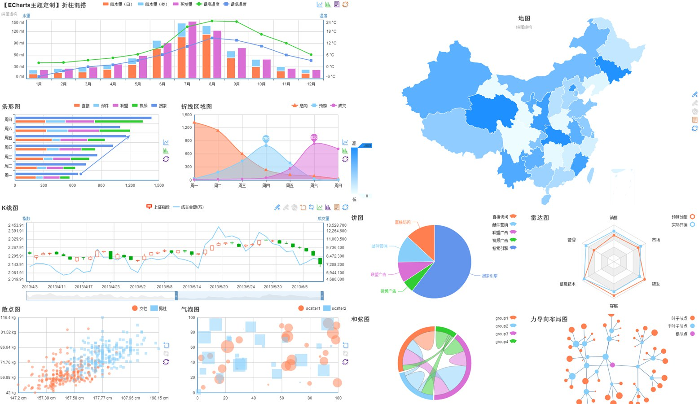

入门教程 ( Getting started ) »
Any feedback or question ? »


地图
-
 标准地图
标准地图
中国地图，多系列，值域漫游 -
标准地图
中国地图，地域选择器 -
标准地图
事件响应，切换，全国34个省市自治区 -
标准地图
世界地图，值域漫游 -
标准地图
世界地图，地域选择器 -
多地图
数据驱动，省市级下钻 -
地图扩展
标准geoJson格式扩展地图类型-香港 -
地图扩展
标准geoJson格式扩展地图类型-美国 -
地图扩展
标准geoJson格式扩展地图类型-大洲 -
地图标线
markLine
多系列 -
地图标线
markLine
炫光特效，模拟百度迁徙，多系列 -
地图标线
markLine
炫光特效，中国铁路干线，多系列 -
地图标注
markPoint
值域漫游 -
子区域模式
子区域模式使用，值域漫游 -
地图
多级控制，个性化填充、标签文本、线条样式等

主题
主题定制调试工具，ECharts Theme Designer
ps:别太依赖代码编辑区，没做本地缓存，页面刷新就没了，建议使用一个本地编辑器编辑主题，只用代码区作为主题定制调试工具。主题写好试试顶部的SaveAsImage（IE8-不支持），会把所有图表合并到一张图中，这是默认样式，期待与我们联系，show出你的主题，让你的设计成为ECharts内置甚至默认主题随时有可能，我们将为您献上一份小礼品同时你的名字将被永留在贡献者名单中。
专题
专题页没做低版本IE兼容性处理，请用IE9+、chrome、safari、firefox或opear等现代浏览器。
- 中国主要城市空气质量实况 by 大佛（百度） · 林峰（百度）
- 中国经济十年时空漫游（2002-2011） by 于博（新华社） · 吴楚茵（南方都市报） · 林峰（百度）
- 中国人口流动大潮（1987-2011） by 孟立昕（腾讯）· 王飞宇（证券时报） · 颜冬（视觉中国） · 林峰（百度）